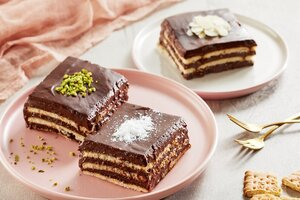

Bisküvi Pastası

Malzemeler:
- 2 paket (200 gram) hazır kakaolu bisküvi
- 1 su bardağı süt
- 1 yemek kaşığı kakao
- 1 yemek kaşığı toz şeker
- 1 paket (200 ml) krema
- 1 su bardağı hindistancevizi rendesi (üzeri için)
Hazırlık:
- Öncelikle bisküvileri blender veya mutfak robotunda iyice ezerek un haline getirin.
- Bir tencerede sütü ısıtın ve içerisine kakao ve toz şekeri ekleyip karıştırın.
- Süt karışımı hafifçe kaynamaya başladığında ocaktan alın ve bisküvi unuyla karıştırarak homojen bir kıvam elde edene kadar karıştırın. Karışımı soğumaya bırakın.
- Bir başka kapta kremayı çırpın, pürüzsüz ve hafif kıvam alana kadar çırpın.
- Soğuyan bisküvi karışımına çırptığınız kremayı ekleyin ve iyice karıştırın.
- Hazırladığınız karışımı bir kek kalıbına veya dikdörtgen bir borcama dökün ve düzgünce yayın.
- Üzerini hindistancevizi rendesiyle kaplayın.
- Buzdolabında en az 2-3 saat dinlendirin veya üzeri iyice donana kadar bekletin.
- Dilimleyerek servis yapın.
- Bu tarif, pratik ve lezzetli bir bisküvi pastası sunar. Üzerini dilediğiniz gibi süsleyebilir veya farklı malzemeler ekleyerek kişiselleştirebilirsiniz. Afiyet olsun!